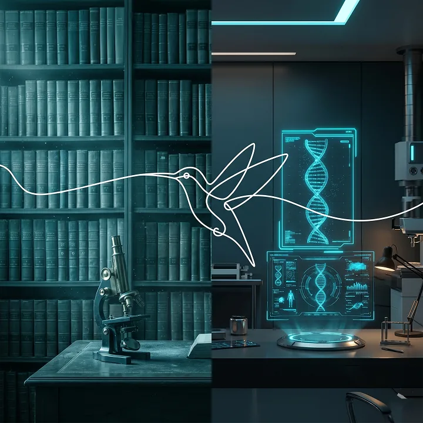

قيد التطوير
التعليم الطبي الافتراضي
رؤية لتدريب سريري أكثر أماناً وتفاعلاً عبر المحاكاة والواقع الافتراضي.
مساحة للتدريب قبل الممارسة
نطوّر بيئة تساعد الطلاب والأطباء على التدريب على الحالات والإجراءات في مساحة تفاعلية وآمنة.
- محاكاة للحالات والإجراءات
- تعاون للفرق الطبية داخل مساحة رقمية
- تدريب سريري مدعوم بـ VR وAR
